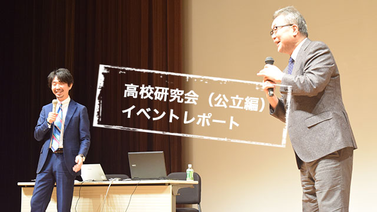
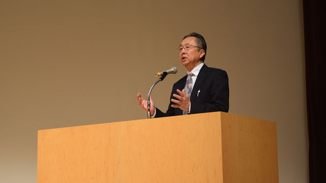
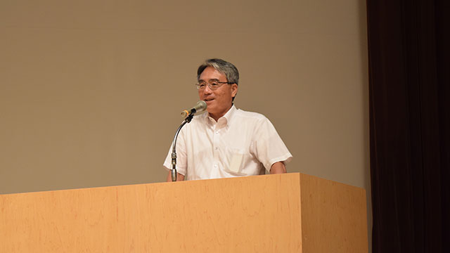
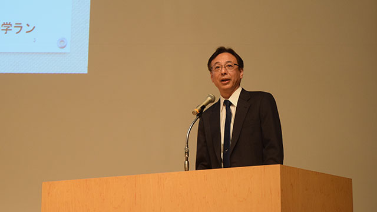
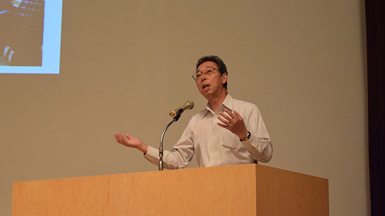
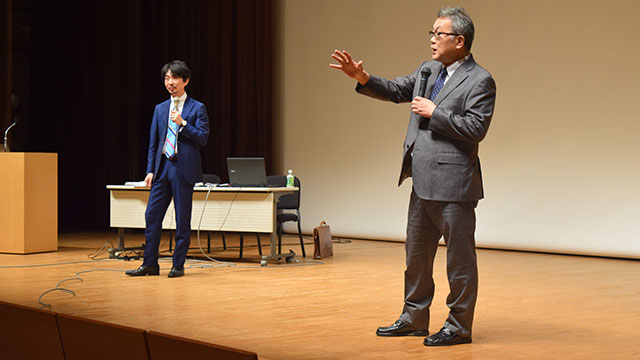

9月16日。台風上陸を前に、ギリギリ平穏な天候の中、「高校研究会公立編」を開催しました。
今年の6月からウェブでお知らせしていたこのイベント、自分たちで言うのもなんですが、とても珍しい試みです。というのも、比較的気安く参加してくださる私立高校と違い、公立高校はこのような民間団体主催の説明会にはなかなか来てくれません。公立高校は県の一組織ですから、特定団体への利益供与になりかねない行動には慎重なのです。にもかかわらず、今回はこの首都圏でも最も人気が高く、かつレベルの高い学校4校の、さらに校長先生にお越しいただくことができました。地域の教育力向上を目指し、収益度外視で（ここだけの話、今回のイベント、完全赤字です。入場料無料ですから）活動している我々の姿勢を理解していただけたと思うと感無量です。
さて、では、会当日の裏話も含めて、ちょっとレポートしてみましょう。
会場はアミュゼ柏。午前10時開演と、塾講師出身の我々（塾講師は基本夜のお仕事です）にはかなりツライ開始時間です。8時半に会場入りし、お客様をお迎えする準備、ゲストの先生方をお迎えする準備に奔走します。
あらかじめ入念にシミュレートしていたこともあり、何事もなく時間は進み、さあもうすぐ開演というときに、まさかのアクシデント発生！ ある高校から使用パワーポイント追加のご依頼を受け、それをファイルに組み込んだら、なんと正常に動かない！ パソコンが悪いのか会場のプロジェクターが悪いのかパワーポイントファイルが悪いのか、PCのプロがいない我々には問題の切り分けができません。実はこれが開演10分前。
使用しているパソコン自体を変えることで解決を図りますが、開演に微妙に間に合わず、結局5分おしてスタートです。
これには本当に参りました。というのも、元来あがり症で不安症なわたし。計画通りに事が進まないと途端にプルプルし始めます。このままパワーポイントなしでやるか？ 修理と並行して会を進めるか？ それとも、それとも…。人生の終わりに見るという走馬灯のように、色々な情景が浮かんでは消え浮かんでは消え。
そんなわたしを尻目に、当研究所所長の管野がクールに場をつないでくれました！
そんなあれこれを乗り越え、パワーポイントも無事復旧し、会が始まります。

トップバッターは県立柏高校。
東葛地域では「2番手」に位置する難関校の一つです。この学校のこれまでのイメージは、いわゆる「田舎の標準的な公立」。落ち着いた（言い方を変えれば地味な）生徒たちが平和な学園生活を送り、進学実績もそこそこ。目立つ特徴はないものの、適度に充実した3年間。そんな感じでしょうか。
しかし、このイメージは初っぱなから崩されました！ 学校の方針についての校長先生のお話は私立高校のような派手さはありませんが、随所に「進学指導」に対する意識の高さがうかがえます。進学を塾頼りにせず、学校でしっかり面倒を見る、と言い切っておられたのも印象的です。当研究所からの質問にも、はっきりと「進学校化に舵を切る」とお答えになっていました。
県立柏高校の説明会情報はこちら
（PDFファイルを開きます）

次は（埼玉）県立春日部高校。
千葉県ではあまりなじみがない、埼玉県のトップ公立です。しかも公立としてはとても珍しい「男子校」。校長先生のお話は、男子校のメリットと公立高校の使命についてがメインでしたが、どれも新鮮です。
なんとなく「旧制中学由来」の「男子校」となれば、バンカラな気風を想像します。学校行事で何十キロも走ったり、遠泳をしたりと、少し古くさい、しかしノスタルジックな情景。しかし、校長先生のお話から分かる学校生活は、こちらもまたイメージとは全く違うものでした。
女子がいないという、男子にとってはとても「気安い」状態の魅力はそのままですが、行事や学習指導はとても近代化されていて理知的です。進学指導についても、東大や国公立医学部にバンバン合格者を出す実績から自信のほどがうかがえます。
一言で言えば、都内の最難関私立進学校（開○や海○みたいな）に近い雰囲気といいましょうか。
県立春日部高校の説明会情報はこちら
（PDFファイルを開きます）

次は県立小金高校。
数年前に制服を導入し受験指導に力を入れはじめた県立柏のライバル。元来の校風は「自由」で行事も盛ん。地味な柏高校に対して派手な小金高校。そんなイメージがあります。
校長先生のお話をお聞きしていると、このイメージだけでは言い尽くせない深みを感じます。お話の中心は2年前に導入された「総合学科」制。これは、一言で言ってしまえば大学の単位制のようなもので、生徒が自分の進路に合わせて授業を選択する仕組みです。
この仕組み自体は学校の校風である「自由」に連なるものですが、一方で、このシステムによって得られる「進学指導」上の利点が紹介されていました。
ここまで聞いてきて、柏と小金のコントラストが際立ちます。両校ともに進学指導に重点を置いていますが、柏が放課後の補習や先生方個人個人の進路指導など従来のやり方をより深めることに重きを置く一方で、小金はシステム自体を大きく変えることで対応しようとしているようです。
県立柏も小金も近年徐々に進学実績を上げていますから、今後どうなるか楽しみですね。
県立小金高校の説明会情報はこちら
（PDFファイルを開きます）

最後は県立東葛飾高校。
東葛地域では押しも押されぬ公立ナンバーワン。「自主自律」という、生徒主体の学校運営が特徴で、「自由な学校」といえば東葛、とだれもが知る有名校です。小金高校が制服を導入した今では、私服登校が許可されている東葛地域唯一の高校でもあります。
さて、この東葛。実は最近大きな改革の渦中にあります。一つは「中学校の設置」もう一つは「進学重視（医歯薬コース設置を含む）」。これまでのイメージでは、東葛は自由放任型の高校の極致であると見られてきました。高校3年間は学校生活（行事・部活・友人関係）に全力を尽くす。受験勉強など卒業してから考えればよい。昔は生徒も先生も半ば冗談、半ば本気で「東葛は4年制高校だ」（＝必ず浪人する）と言っていたものです。
しかし、時代は変わりました。校長先生のお話では、この自由な校風の息吹は残しながらも、学校全体としてはしっかり勉強させる方向に向かっているようです。そして、この方針はなにも上から押しつけられたものではなく、むしろ生徒たちが望んでいるものでもある様子。
その結果、昨年度の進学実績は東大6名合格を筆頭に、地域ナンバーワン公立としてふさわしいものへと大きく復活を遂げています。

さて、ここまで非常に簡潔に4校の紹介をしてきました。私が今回の会を実際に行ってみて感じたのは、「多様性」です。冒頭にも述べたように、公立高校は県の一組織ですから、私立ほどの独自性を出すことは構造的に不可能です。さらに、先生方も異動があり、ローテーションしていきますので、私立によくある「○○高校の名物先生」のような方は生まれづらくなります。結果、公立は「小さな違いはあっても、大筋では大体同じ」そう思ってきました。
しかし、今回のように各校連続して校長先生にお話を伺ってみると、それぞれの個性に驚かされます。
スタンダードな進学校：県立柏
新しい形の進学校：小金
余裕のある名門難関進学校：春日部
バランスのとれた進学校：東葛
と、勉強を重視する姿勢は同じでもそのアプローチは大きく異なります。
このような対比を見るのは各校それぞれの学校説明会では難しいものです。ご来場いただいたみなさまには、お話の内容もさることながら、先生方が醸し出す雰囲気も含めた各校のポリシーの違いを感じていただけていれば幸いです。
会終了後お客様に書いていただいたアンケート結果は、これまで当研究所が主催してきたどのイベントよりも好評でした。我々、そして高校の先生方がお伝えしたかったことがお客様のニーズとしっかり合っていたことにホッとしています。
今後も教育研究所ARCSでは、地域の教育力向上を目指して様々な情報提供イベントを企画運営していきます。直近では11月に「高校研究会私立編」を予定していますので、是非ご参加ください！
※今週の管野ブログは休載となります。